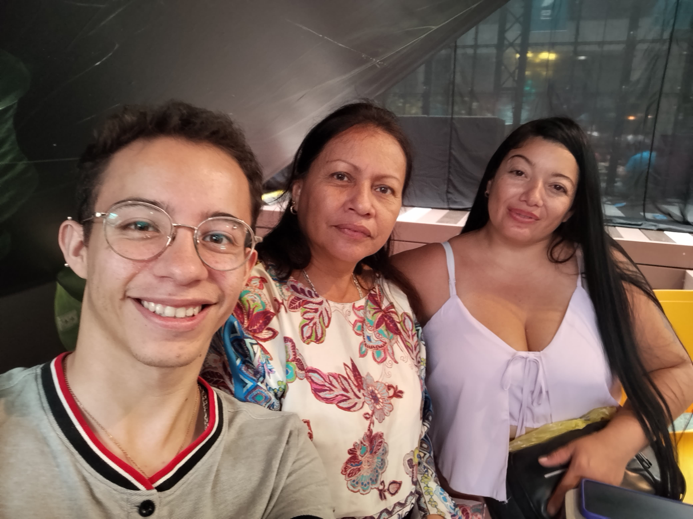

Sobre mi familia
Familia
Mi familia es muy unida, somos cariñosos, tenemos la costumbre de tratar de vernos seguido ya que por los trabajos y estudios es un poco difícil de vernos, hemos hecho viajes familiares por ejemplo San Andrés, Coeñas, Barranquilla, y ya lo normal que son sitios como parques y restaurantes de la ciudad.
